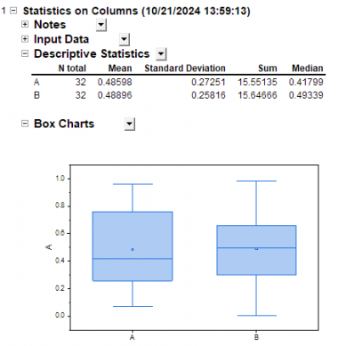
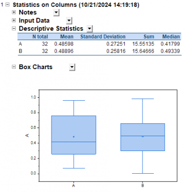
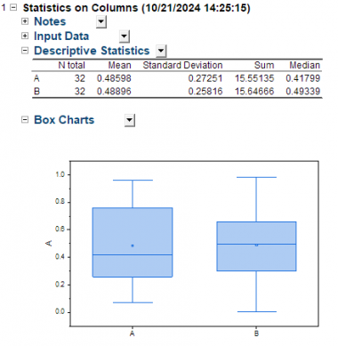
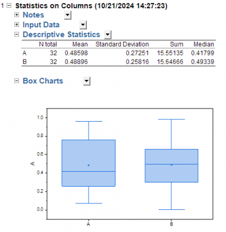
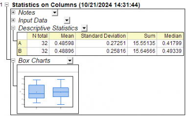
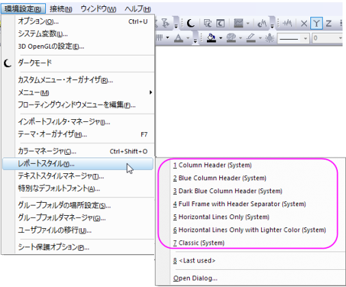

レポートスタイルダイアログボックスは、Originのレポートシートテーブルスタイルを制御するためのインターフェースを提供します。
プレビューパネルを使用して、カスタマイズされた設定を確認できます。
OKをクリックして新しいスタイルを保存すると、デフォルトのレポートシートスタイルに設定されます。以降作成される新しいレポートシートは新しいスタイルに従います。既存のレポートシートの場合は、再計算するとスタイルを更新できます。
Originはレポートスタイルについて、複数のシステムテーマを提供しています。メインメニューの環境設定：レポートスタイル：テーマ名を選択して、レポートシートスタイルのテーマを直接変更できます。

| 列ヘッダ | Blue Column Header |
|---|---|
 |
 |
| Dark Blue Column Header | Full Frame with Header Separator |
|
|
|
| Horizontal Lines Only | Horizontal Lines Only with Lighter Color |
 |
 |
| Classic | |
 |